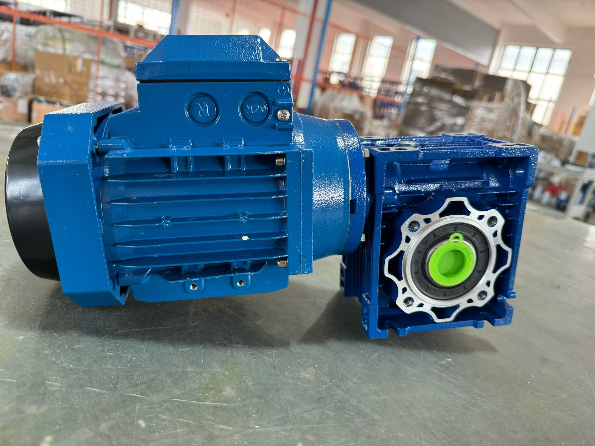

What Is a Worm Gear Reducer Motor?
A worm gear reducer motor is a compact drive assembly in which an electric motor is matched to a worm gearbox. The gearbox turns the power flow through a right angle while reducing speed and increasing available output torque. It is commonly considered for conveyors, packaging machinery, feeders, mixers, doors, gates and agricultural equipment.
The final assembly is more than a gearbox frame and a motor power value. The motor flange or input connection, reduction ratio, output configuration, mounting position and actual operating duty must work together. See SMK's worm gear motor product page for the available RV-series configuration overview.
Start Selection with Speed and Torque
Start with the driven machine, not with a gearbox model number. Determine the required output speed, running torque and peak or starting torque. If input speed is known, the initial reduction ratio can be estimated from input speed divided by required output speed. The worm gearbox ratio and torque calculator can help with a preliminary check.
Motor power remains an important check, but it does not replace torque and duty verification. A configuration that appears suitable at one ratio or operating condition may not be suitable at another.
RV-Series Reference Ranges
The following values summarize published RV-series reference ranges for preliminary product-family comparison. They are not a single rating that applies to every ratio, installation or service condition.
| RV frame group | Typical motor-power range | Typical ratio range | Center-distance range |
|---|---|---|---|
| RV025–RV050 | Approximately 0.06–1.5 kW | 5–100 | 25–50 mm |
| RV063–RV090 | Approximately 0.18–4.0 kW | 7.5–100 | 63–90 mm |
| RV110–RV150 | Approximately 0.55–15 kW | 7.5–100 | 110–150 mm |
For a model-by-model view of rated-power, ratio and interface options, review the RV worm gear motor specifications. If a separate gearbox is required instead of a motor-and-reducer assembly, see the worm gear reducer range.
Key Details to Confirm Before Ordering
1. Motor and electrical requirements
Provide motor power, voltage, frequency and rated speed. If the machine requires a brake motor, DC motor or servo input, state that requirement before a configuration is proposed. Compatible options are subject to the selected model and interface confirmation.
2. Output and mounting arrangement
Confirm whether the machine needs a keyed hollow shaft, hollow shaft with output flange, plug-in solid shaft or another output arrangement. Also state whether the drive will be foot mounted, flange mounted or torque-arm mounted.
3. Operating duty and environment
Operating hours, starts per hour, load variation, shock load, ambient conditions and mounting position influence the final selection. They can affect thermal behavior and lubrication requirements, so they should be included in the inquiry rather than assumed from a frame size.
What to Send in a Worm Gear Reducer Motor Inquiry
- Machine application and driven load
- Required output speed, running torque and peak torque
- Preferred motor power, voltage, frequency and input speed
- Required ratio if already known
- Operating hours, starts, shock load and ambient conditions
- Mounting position, output bore or shaft dimensions, and motor flange requirements
- Any drawing, nameplate photo or replacement model information
SMK can use this information to check a suitable assembly and confirm the applicable drawing. Learn about the production operation and product support at the SMK factory page.
Frequently Asked Questions
What is a worm gear reducer motor?
It is a matched electric motor and right-angle worm gearbox assembly used to reduce output speed and increase available output torque.
How do I select a worm gear reducer motor?
Start with required output speed and torque, then confirm ratio, motor power, electrical supply, duty, mounting position and the necessary shaft or flange dimensions.
Can I select only by motor power?
No. Motor power alone does not verify the gearbox ratio, output torque, thermal duty, mounting or mechanical interfaces. Those details must also be confirmed.
What should I provide for a replacement request?
Send the existing model or nameplate, application, output speed, torque, motor data, mounting position and key dimensions where available.